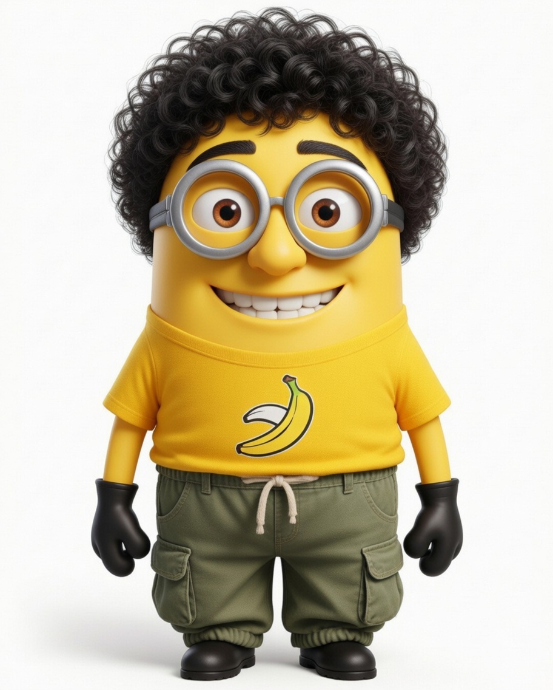

تطبيقات الحاسب في التعليم
اختبار
الفيديو التفاعلي
اختبر معلوماتك عن محتوى البريزنتشن

مرحباً يا بطل
جاهز تتحدى نفسك؟
عندك 20 سؤال متدرجة في الصعوبة عن الفيديو التفاعلي وأثره على دافعية الطالب.
20
سؤال
3
مستويات
4
خيارات لكل سؤال
ابدأ الاختبار
سؤال 1 من 20
النقاط: 0
هيا بينا نبدأ الاختبار يا صديقي!
السؤال 1
سهل
السؤال التالي ←
0
من 20
أحسنت
0
إجابات صحيحة
0
إجابات خاطئة
0%
نسبة النجاح
إعادة الاختبار